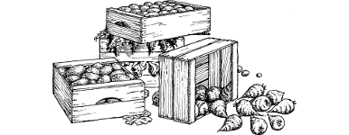

81
There is a great deal of activity going on at the main entrance to the barracks. Columns of Bhanarian spearmen, clad in black quilted uniforms with wide silk leggings, go marching through its gate every few minutes with an almost clockwork regularity. You suspect that they are mustering in preparation for the arrival of the Autarch, although they seem too heavily armed to be gathering for ceremonial parade duties. You also catch sight of some Xanon, and you sense that these creatures were among those whom you fought at the ruins earlier today.
You signal to Gildas and his men to follow as you skirt around the barracks and approach one of several smaller entrances that punctuate its northern flank wall. A line of wagons are parked here awaiting their turn to enter. While they wait, the drivers and their civilian helpers busy themselves by checking the food and provisions they are delivering to the barracks’ kitchens. One driver is struggling to recover the contents of a crate that has fallen from the tailgate of his wagon and broken open.
{kind=link}

If you wish to offer to help the driver recover his spilled load, turn to 227.
If you wish to attempt to hide in the rear of one of the wagons that is queueing to enter the barracks, turn to 301.